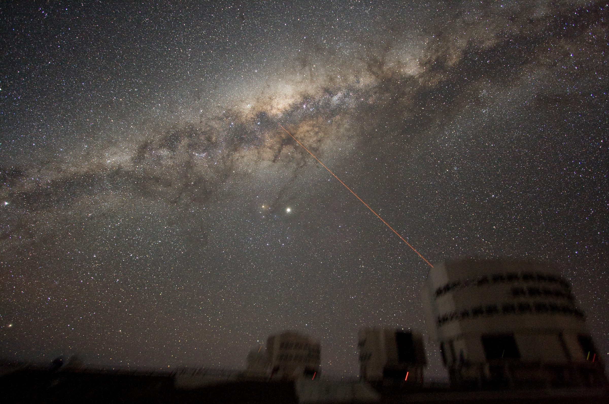
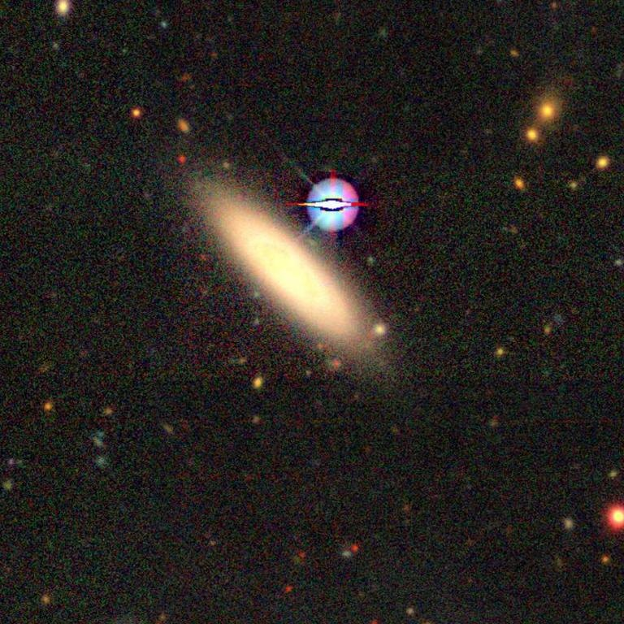
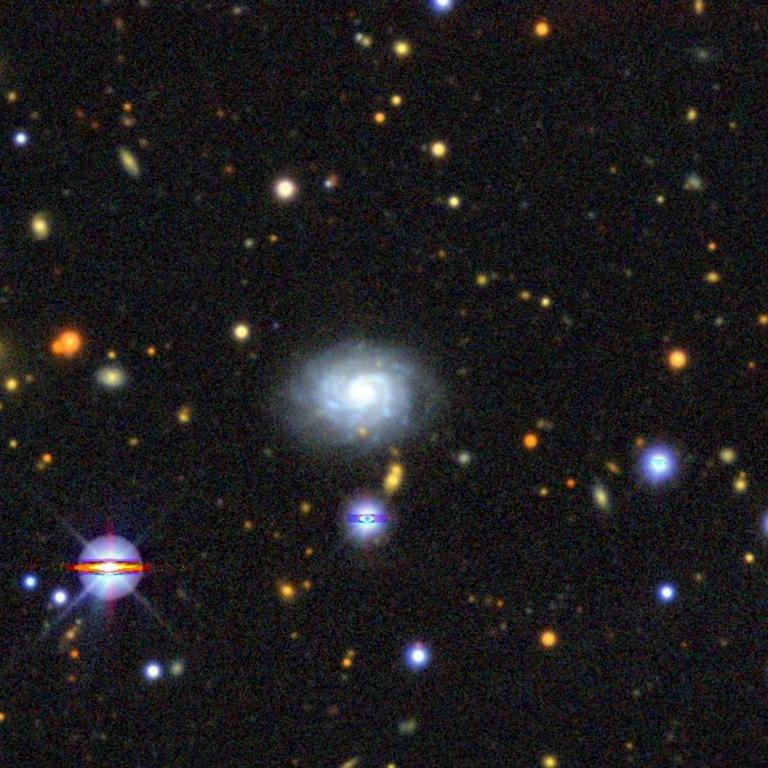
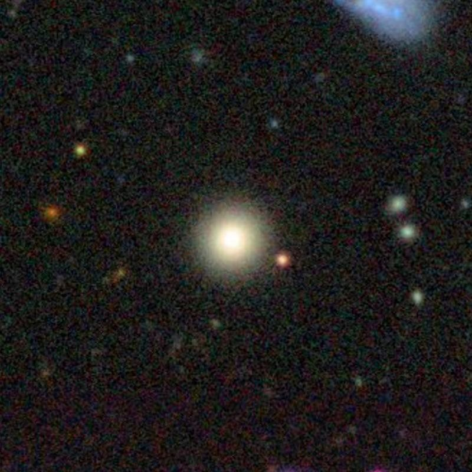
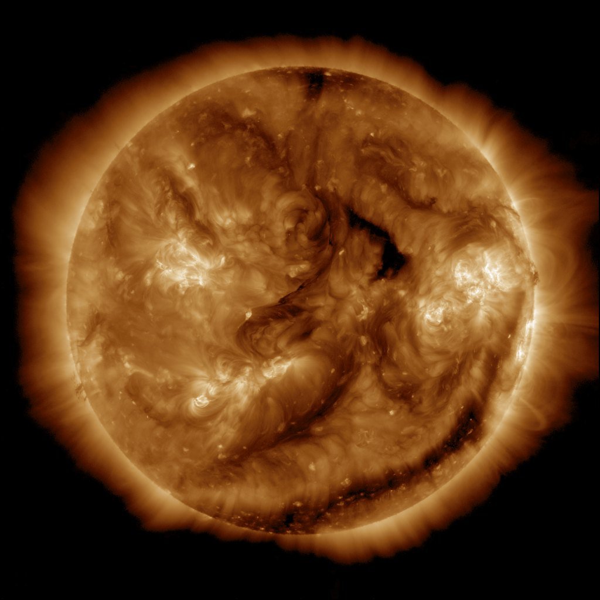
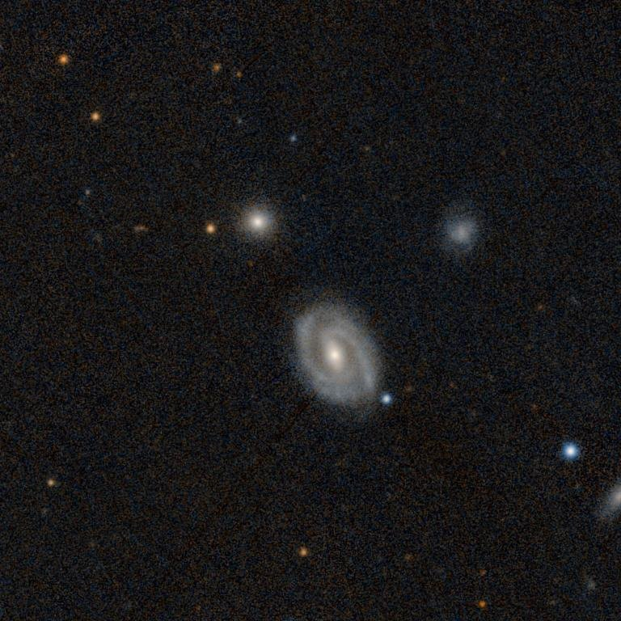
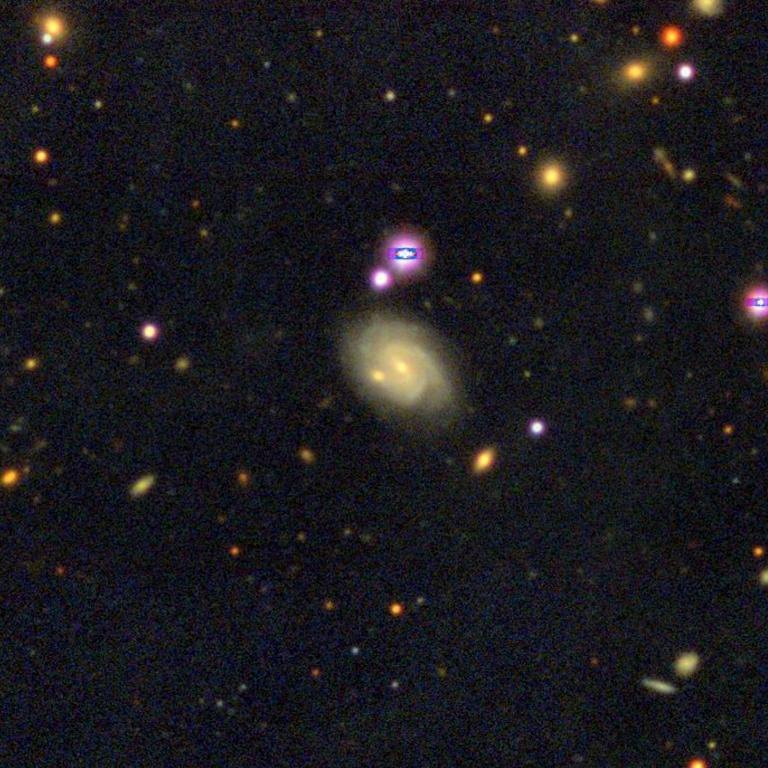
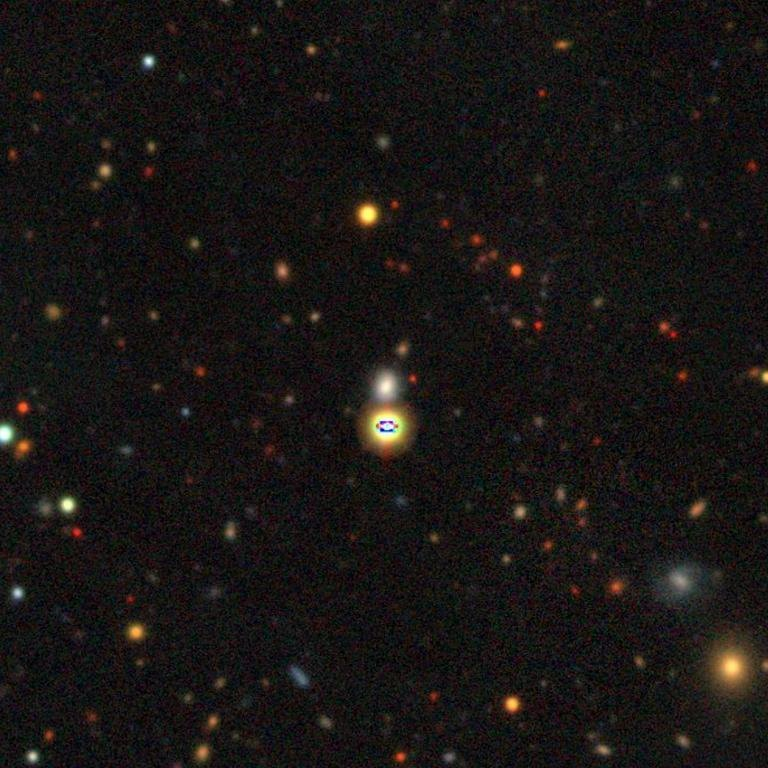
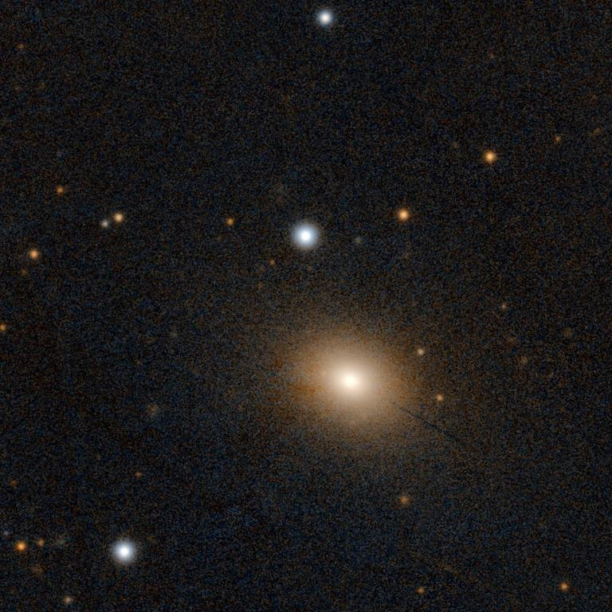

The sky this week,
in real pictures.
ESO/Y. Beletsky · Paranal Observatory
i
This week
41 events in 7 days.

C3.3 solar flare from active region 14535
18:17 UTC

SN 2026acna (SN Ia)
Archive

SN 2026abvs (SN IIn)
Archive

ZTF22abegjtx
Archive

CME 493 km/s
14:45 UTC

SN 2026aajs (SN Ia)
Archive

ZTF26abkjlpd
Archive

SN 2026acow (SN Ia)
Archive

ZTF26abnuiar
Archive
Candidates
Dips in starlight, waiting for your eye.

TIC 219345170
3.81 d · candidate

TIC 29781292
0.78 d · candidate

TIC 1003831
11.21 d · candidate

TIC 150428135
17.94 d · candidate

TIC 307809773
1.64 d · candidate

TIC 88863718
2.22 d · candidate
Lab
Experiments on real stars.

Star thermometer
NASA · ESA
i
Extreme star cluster bursts into life (NGC 3603)
NASA, ESA and the Hubble Heritage (STScI/AURA)-ESA/Hubble Collaboration
CC BY 4.0
Source ↗Hear a star
NASA TESS mission
i
WASP-18 in TESS pixels, sector 104 (between dips)
NASA TESS mission, via MAST; rendered by Planet Hunter
Public domain (NASA data)
Source ↗
Hubble diagram
NASA · ESA
i
Hubble sees galaxies galore (Hubble Ultra Deep Field)
NASA, ESA, and S. Beckwith (STScI) and the HUDF Team
CC BY 4.0
Source ↗Chemical fingerprints
NASA SDO/AIA
i
NASA SDO/AIA 131 Å image of the whole Sun, 2026-09-19 18:14 UTC, 2 min before the flare peak (18:17 UTC) of this flare. 131 Å shows plasma near 10 million °C, where flares glow brightest. The source reports the flare at N14E90 (NOAA active region 14535): on the left (east) edge of the disk, 14° north of the equator.
Courtesy of NASA/SDO and the AIA, EVE, and HMI science teams
Not copyrighted (NASA SDO image-use rules); credit line required
Source ↗{kind=link}
Famous stars

WASP-18
DESI Legacy Surveys · archive
i
DESI Legacy Imaging Surveys DR10 colour cutout, 7.2′ around WASP-18
DESI Legacy Imaging Surveys DR10, colour HiPS by CDS; cut with CDS hips2fits
CC BY 4.0 (Legacy Surveys; acknowledgement required)
Source ↗
WASP-121
SkyMapper · archive
i
SkyMapper DR1 colour cutout, 7.2′ around WASP-121
SkyMapper Southern Sky Survey DR1 (ANU), colour HiPS by CDS; cut with CDS hips2fits
CC BY 4.0 (SkyMapper; acknowledgement required)
Source ↗
WASP-43
DESI Legacy Surveys · archive
i
DESI Legacy Imaging Surveys DR10 colour cutout, 7.2′ around WASP-43
DESI Legacy Imaging Surveys DR10, colour HiPS by CDS; cut with CDS hips2fits
CC BY 4.0 (Legacy Surveys; acknowledgement required)
Source ↗TOI-700
DESI Legacy Surveys · archive
i
DESI Legacy Imaging Surveys DR10 colour cutout, 7.2′ around TOI-700
DESI Legacy Imaging Surveys DR10, colour HiPS by CDS; cut with CDS hips2fits
CC BY 4.0 (Legacy Surveys; acknowledgement required)
Source ↗How we stay honest3 rules
Every picture is real and credited; tap i on any picture for its source and licence. Survey pictures marked archive were taken years before the event.
When a computer sorted something, the caption says "guess" with how sure it was.
A dip in a star's light is a planet candidate until astronomers confirm it.
Data and picture credits73 pictures
NASA, ESA/Webb, ESA/Hubble, ESO, NOIRLab, SDO via Helioviewer, and survey cutouts cut with CDS hips2fits. The full list with licences is in credits.json.